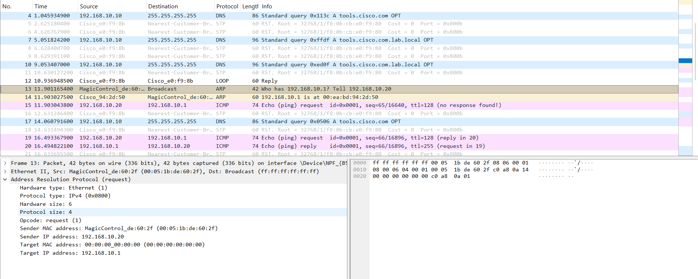
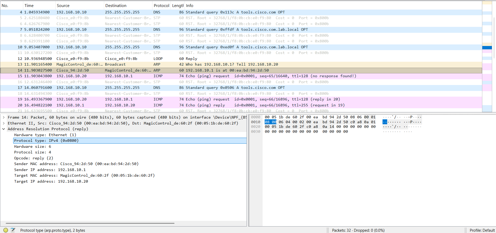

Objective
Understand what actually crosses the wire.
This physical lab traces how a host resolves a same-subnet IP address into a destination MAC address, how Ethernet broadcasts carry a specific ARP question, and how Wireshark decodes protocol fields from raw bytes.

Key finding
An ARP request is a specific Layer 3 identity question carried in a Layer 2 broadcast frame. The Ethernet destination is ff:ff:ff:ff:ff:ff because the destination MAC is unknown, while the ARP payload asks for a specific target IP.


Operational interpretation
- Layer 2 forwarding depends on destination MAC addresses.
- ARP bridges Layer 3 identity and Layer 2 local delivery.
- Wireshark translates raw structured bytes into human-readable protocol fields.
- Routers receive frames, validate Layer 2 delivery, decapsulate, inspect Layer 3 headers, make a route decision, and re-encapsulate for the next hop.